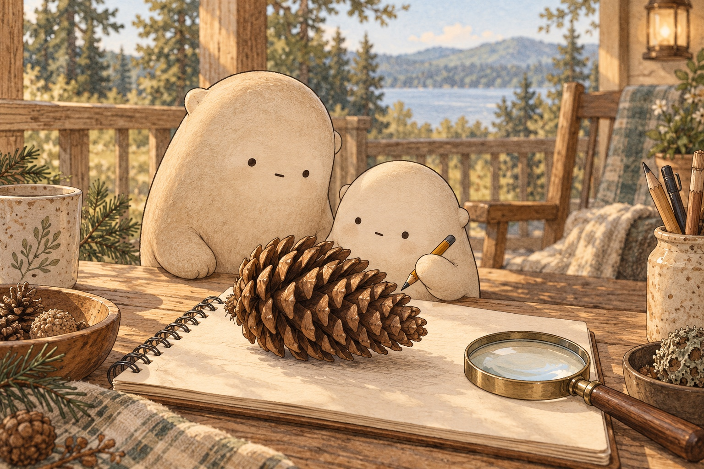

01What is a pinecone made of?

Look closer. Follow a spiral around the cone.
A little explanation. A pinecone is a woody seed case with many overlapping parts called scales. Seeds grow tucked beside the scales. The scales wind around the cone in spirals.
Try this. Count the scales you can see on one side, then draw one spiral.